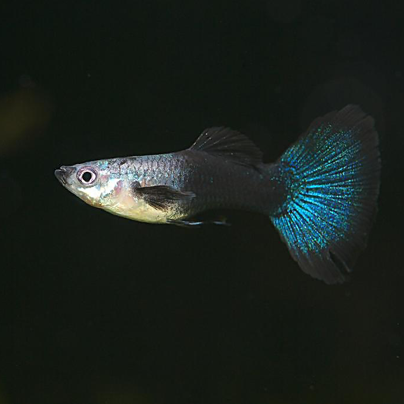

ZSHU朱叔儿
29分钟前
孔雀鱼为杂食性小型鱼种。孔雀鱼为杂食性小型鱼种。孔雀鱼为杂食性小型鱼种。孔雀鱼为杂食性小型鱼种。孔雀鱼为杂食性小型鱼种。
北京/朝阳
#我要上页面#
#孔雀鱼#
#买一赠一#

8988
人最终评分:
89.5分
评分规则
8998
29条评论
ZSHU朱叔儿
29分钟前
孔雀鱼为杂食小型鱼种。 繁衍颁于部分热带地区河川下游及湖沼、沟渠中，中野生栖地呈现多样化，主要栖息于淡水流域。
ZSHU朱叔儿
29分钟前
孔雀鱼为杂食小型鱼种。 繁衍颁于部分热带地区河川下游及湖沼、沟渠中，中野生栖地呈现多样化，主要栖息于淡水流域。
ZSHU朱叔儿
29分钟前
孔雀鱼为杂食小型鱼种。 繁衍颁于部分热带地区河川下游及湖沼、沟渠中，中野生栖地呈现多样化，主要栖息于淡水流域。
发布
孔雀鱼为杂食小型鱼种。 繁衍颁于部分热带地区河川下游及湖沼、沟渠中，中野生栖地呈现多样化，主要栖息于淡水流域。
孔雀鱼为杂食小型鱼种。 繁衍颁于部分热带地区河川下游及湖沼、沟渠中，中野生栖地呈现多样化，主要栖息于淡水流域。
孔雀鱼为杂食小型鱼种。 繁衍颁于部分热带地区河川下游及湖沼、沟渠中，中野生栖地呈现多样化，主要栖息于淡水流域。